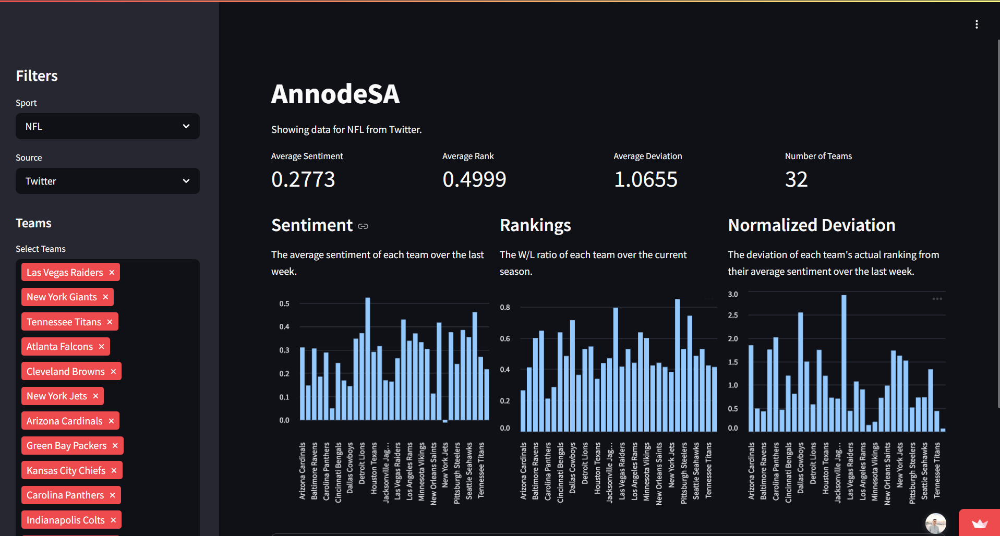

Our project looked into the sentiment correlation between fans on social media platforms such as
Twitter and Reddit. We found that the data we gathered from social media allows us to
approximate the sentiment towards different sports teams. When comparing this information to the
rankings of said teams, a relationship can be observed. Namely, that the deviation of sentiment
score to ranking score can be used in such a way where the future performance of a team can be
inferred.
#Python
#Numpy
#Pandas
#Streamlit
#DataScience
#TeamPerformance
